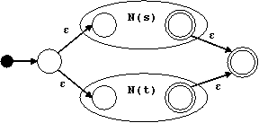
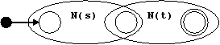
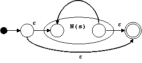
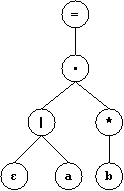
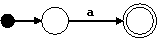
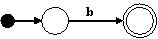
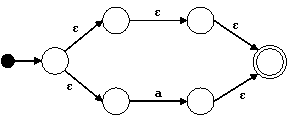
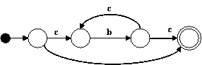
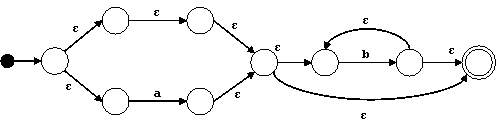
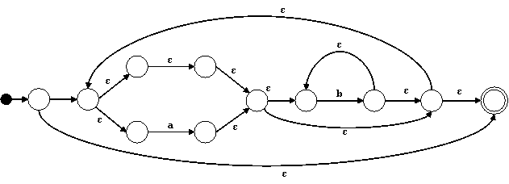

La clase de lenguajes aceptados por los autómatas finitos\ es exactamente la de los lenguajes regulares\. Es decir, para cada Automata Finito M existe una Expresion Regular que define L(M), y para cada Expresion Regular r existe un Automata Finito N tal que L(r) es el lenguaje aceptado por el autómata.
El Método de Thompson es una manera sistemática de construir un Automata Finito M que acepta el mismo lenguaje que una Expresion Regular dada.
Para una expresión regular s Hacemos la transformación N(s) sobre un árbol de sintaxis abstracta de la expresión recorriendo los nodos en orden de profundidad primero (depth first).
Para un símbolo a ∈ Σ hacemos:
Para un nodo | con subárboles s y t hacemos:
Para un nodo ⋅ con subárboles s y t hacemos:
Para un nodo * con subárbol s hacemos:

Ejemplo
Para la expresión regular:
((ε|a)b*)*
Construimos el siguiente árbol de sintaxis abstracta:

Para los nodos ε, a, y b, construimos los siguientes autómatas:



Para el nodo | construimos el siguiente autómata:

Para el nodo * hacemos:

Para el nodo ⋅ hacemos:

Finalmente, para el * en el nodo raíz hacemos:

{kind=link}
{kind=link}
{kind=link}
{kind=link}
{kind=link}
{kind=link}
{kind=link}
{kind=link}
{kind=link}
{kind=link}
{kind=link}